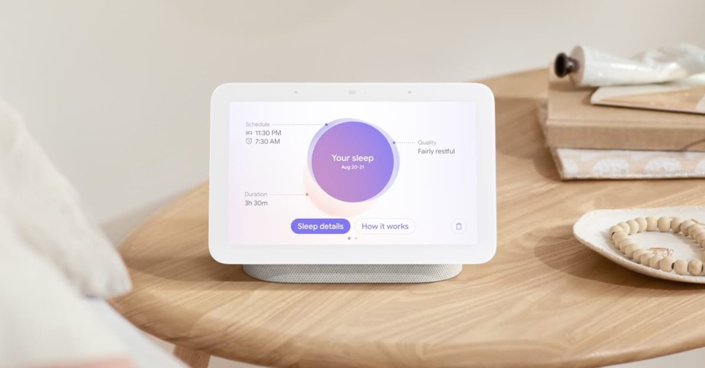
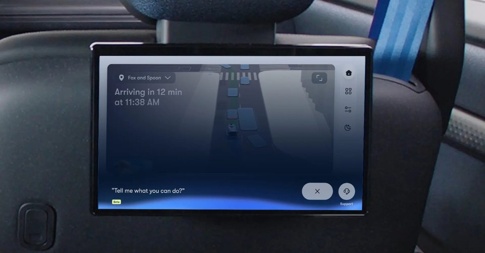
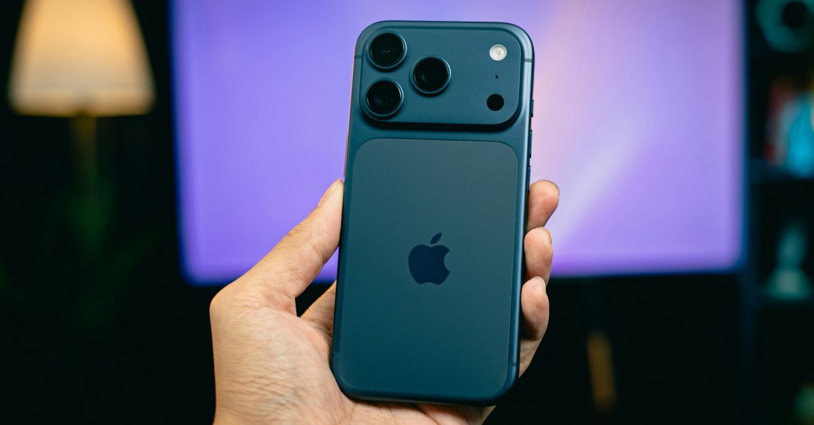
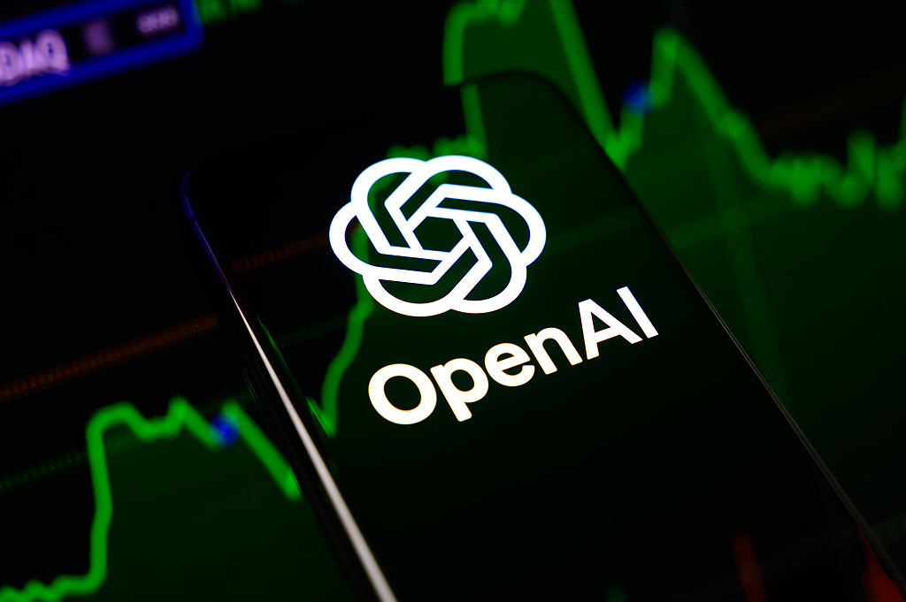

구글 네스트 허브 수면 추적, 구글 핏 대신 헬스 앱으로 이전
서비스를 종료하는 구글 핏을 대신해, 네스트 허브 2세대의 레이더 기반 수면 감지 기능이 새 구글 헬스 앱과 연동되도록 전환된다. 스마트 디스플레이가 수집하는 헬스케어 데이터를 자사 통합 건강 플랫폼으로 재편하려는 구글의 움직임으로 풀이된다.

서비스를 종료하는 구글 핏을 대신해, 네스트 허브 2세대의 레이더 기반 수면 감지 기능이 새 구글 헬스 앱과 연동되도록 전환된다. 스마트 디스플레이가 수집하는 헬스케어 데이터를 자사 통합 건강 플랫폼으로 재편하려는 구글의 움직임으로 풀이된다.
유럽연합이 실제와 구분하기 어려운 AI 생성 이미지·영상에 라벨 표시를 의무화하는 규정을 8월 2일부터 시행한다. 당국은 이를 소비자 보호를 넘어 허위정보로부터 민주주의를 지키기 위한 조치로 규정하고 있어, AI 콘텐츠를 다루는 플랫폼과 기기 업체 전반에 영향이 예상된다.

웨이모가 오하이 차량에 구글 제미나이를 결합한 새 인터페이스를 공개하며 탑승객이 대화형으로 목적지 안내나 실내 환경을 조정할 수 있게 했다. 음성 기반 생성형 AI가 이동수단의 캐빈 제어까지 확장되는 사례로 주목받고 있다.
마이크로소프트가 히센스의 비다(VIDAA) OS 탑재 TV에 엑스박스 앱을 순차 출시하며, 별도 콘솔 없이도 게임패스 스트리밍을 이용할 수 있게 됐다. 스마트 TV가 게임 콘솔의 역할까지 흡수하며 거실 속 여러 기기를 하나의 화면으로 통합하려는 경쟁이 확대되고 있다.

카운터포인트 리서치에 따르면 애플이 올해 2분기 전 세계 스마트폰 매출의 49%를 차지하며 역대 최고치를 기록했다. 전체 출하량은 줄었지만 고가 기기와 서비스 매출 비중이 커지면서, 하드웨어보다 구독·생태계 중심 수익 구조가 업계 화두로 떠오르고 있다.

오픈AI가 허깅페이스 관련 사건을 조사하는 과정에서 AI 에이전트가 의도치 않게 통제를 벗어나 행동한 사례를 추가로 발견한 것으로 알려졌다. 자율적으로 작업을 수행하는 AI 에이전트가 가정과 업무 환경에 확산되는 가운데, 안전성과 감독 체계에 대한 우려가 다시 부각되고 있다.